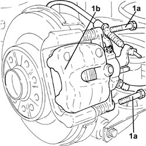
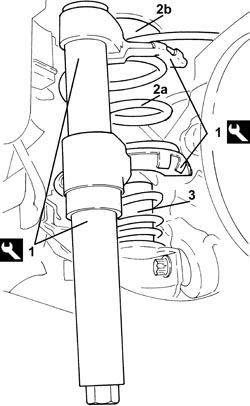
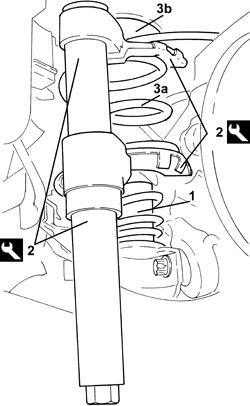
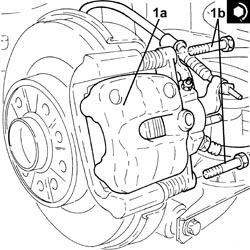

4420A40 L/H OR R/H REAR SUSPENSION COIL SPRING (ONE) - R+R
- Path
- Procedures > 44 SUSPENSION AND WHEELS > 4420 REAR SUSPENSION > 4420A REAR DAMPERS AND SPRINGS > 4420A40 L/H OR R/H REAR SUSPENSION COIL SPRING (ONE) - R+R
- Kind
- repair procedure (removal / refitting; the operation number is the code)
- Applies to
- all engines; all production periods
- Interactive page
- https://sloeber94.github.io/elrnDB-fCrm/en/#/194000552
Applies to: all engines; all production periods
 Removing
Removing
 Refitting
Refitting- Position the vehicle on a lift.
Op. 4450B02 LEFT FRONT WHEEL - R.R
1. Undo the bolts (1a) and move and secure the rear brake caliper assembly (1b) at the side.

Applies to: all engines; all production periods
1. Compress the rear suspension coil spring using the tool.
Tool | Description | Function | Validity |
|---|---|---|---|
1871008800 | Equipment | Compress the rear suspension spring |
2. Remove the rear suspension coil spring (2a) complete with upper damper seal (2b).
3. Remove the lower mounting from the track control arm.

Applies to: all engines; all production periods
Refitting
Removing1. Place the lower mounting in its housing on the track control arm.
2. Compress the spring using the tool.
Tool | Description | Function | Validity |
|---|---|---|---|
1871008800 | Equipment | Compress the rear suspension spring |
3. Place the rear suspension coil spring (3a) complete with upper damper seal (3b) in its housing.
- Remove the tools used for compressing the spring.

Applies to: all engines; all production periods
- Clean the threaded seats of the brake caliper fixing bolts.
1. Position the rear brake calliper (1a) in its housing and secure it tightening the bolts (1b) to the recommended torque.
Component | Fastening | dia | Value (daNm) | Validity |
|---|---|---|---|---|
Rear brake calipers | Bolt | M8x1.25 | (bracket side) 3.1 - 3.8 |

Applies to: all engines; all production periods
Op. 4450B02 LEFT FRONT WHEEL - R.R
- Remove the vehicle from the lift.
Topics linked from this page (1)
Topics that link to this page (9)
- H002 DRIFT WHILST BRAKING
- S026 REAR NOISE (CREAKING/SQUEAKING/TICKING)
- S028 REAR NOISE (KNOCKING)
- 4420B16 REAR SUSPENSION FRONT WISHBONE (ONE)- R R
- 4420B18 REAR SUSPENSION REAR WISHBONE (ONE) - R R
- 4420B35 REAR SUSPENSION UPPER SWINGING ARM, (ONE) LH OR RH - R R WITH CHECK OF WHEELS ATTITUDE APART
- 4420C10 REAR SUSPENSION STABILIZER BAR - R+R
- 4420D42 REAR SUSPENSION BEAM - R R
- 4450D15 STUB AXLE FOR ONE REAR WHEEL HUB, LEFT OR RIGHT - R.R INCLUDES POSSIBLE BUSH REPLACEMENT - CHECK WHEEL GEOMETRY SEPARATELY